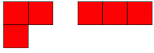
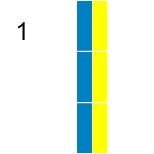

Project Euler 161
题目
Triominoes
A triomino is a shape consisting of three squares joined via the edges. There are two basic forms:

If all possible orientations are taken into account there are six:

Any \(n\) by \(m\) grid for which \(n\times m\) is divisible by \(3\) can be tiled with triominoes.
If we consider tilings that can be obtained by reflection or rotation from another tiling as different there are \(41\) ways a \(2\) by \(9\) grid can be tiled with triominoes:

In how many ways can a \(9\) by \(12\) grid be tiled in this way by triominoes?
解决方案
一个明显的优化：如果列的长度比行大，那么可以行列互换。为了加速，明显应该用位运算来表示列的状态（因为它的长度短）。
使用动态规划的思想进行计数。为了使得计数不重合，那么使用以下方法：每次选定填充的格子，必定是行下标最下的格子（如果有多个，那么就选列下标最小的）。在这个选定的格子中，依次尝试填入\(6\)个种类的方块。
由于每次填入的方块最多\(3\)行，因此本代码记录状态时，每次都要表示\(3\)行的状态。
如果发现第一行被填完了，那么就可以忽略掉这一行，直接从下一行开始填。
本题还使用记忆化搜索，避免再度搜索已经检查过的状态。
下面的py代码是解答时写的，C++代码是解答后看了一些优化方案然后再写的。
代码
1 |
|
1 | N, M = 9, 12 |